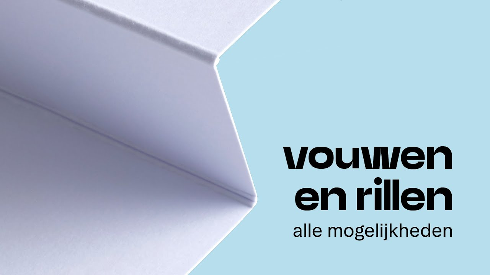

Rillen
Wat is Rillen?
Definitie
Rillen is een druktechniek waarbij een lijn in het papier wordt geperst om een vouw te vergemakkelijken. Dit proces creëert een indruk in het papier zonder het te snijden of te perforeren. Het belangrijkste doel van rillen is om ervoor te zorgen dat het papier netjes en gemakkelijk kan worden gevouwen zonder te scheuren of te barsten, vooral bij dikker papier of karton.
Voordelen van Rillen
- Nettere Vouwen: Voorkomt het scheuren of breken van het papier bij het vouwen.
- Professionele Afwerking: Zorgt voor een strakke, nette vouw die er professioneel uitziet.
- Gebruiksgemak: Maakt het eenvoudiger om dikke of stijve materialen te vouwen.
Toepassingen van Rillen
Rillen wordt vaak gebruikt voor:
- Folders en Brochures: Voor een nette vouwlijn in het midden.
- Kaarten: Zodat uitnodigingen of wenskaarten gemakkelijk gevouwen kunnen worden.
- Verpakkingen: Voor het maken van strakke en stevige vouwen in verpakkingsmateriaal.
- Boekomslagen: Om een scherpe en nette vouw te krijgen bij de rug van een boek.
Hoe Werkt Rillen?
Tijdens het rillen wordt het papier tussen een rilmes en een rilplaat geplaatst. Het rilmes drukt een groef in het papier, waardoor een verzwakte lijn ontstaat waarlangs het papier kan worden gevouwen. Deze techniek kan zowel handmatig als machinaal worden uitgevoerd, afhankelijk van de oplage en het type materiaal.
Belangrijke Overwegingen bij Rillen
- Dikte van het Papier: Dikker papier vereist meestal een diepere ril om een nette vouw te garanderen.
- Type Materiaal: Verschillende papiersoorten reageren anders op rillen, dus het is belangrijk om de juiste instellingen te gebruiken.
- Positie van de Ril: De ril moet precies op de gewenste vouwlijn worden aangebracht om een symmetrische en esthetische vouw te krijgen.